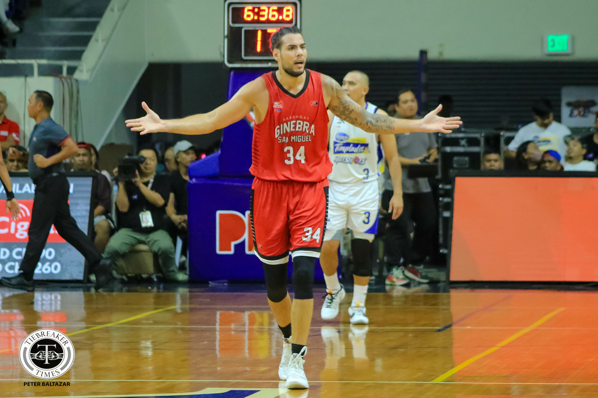
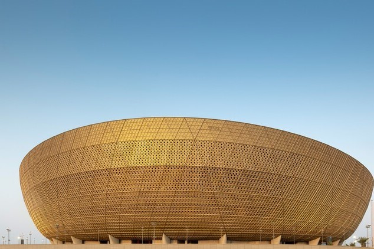

- General
- 8th title a culmination...
8th title a culmination of Creamline's 'most challenging' PVL campaign: Valdez
From PBA News
Published May 13, 2024 04:26 PM PHT
|
Updated May 13, 2024 08:03 PM PHT
 Creamline celebrates after securing a fourth straight PVL All-Filipino Conference championship at the expense of sister team Choco Mucho, May 12, 2024 at the Araneta Coliseum. Mark Demayo, ABS-CBN News
Creamline celebrates after securing a fourth straight PVL All-Filipino Conference championship at the expense of sister team Choco Mucho, May 12, 2024 at the Araneta Coliseum. Mark Demayo, ABS-CBN News
MANILA — The Creamline Cool Smashers were in familiar territory on Sunday night, during the conclusion of the Premier Volleyball League (PVL) 2024 All-Filipino Conference Finals.
After a poetic championship-clinching point by Bea De Leon — now a Cool Smasher who once starred for their modern-day rivals Choco Mucho Flying Titans — jubilant noise filled the historic Araneta Coliseum as Creamline hoisted their eighth league trophy while donning their gold medals.
But while the Sherwin Meneses-mentored team was in a celebratory mood as they cemented themselves as the queens of Philippine volleyball yet again, the manner of how they earned their latest triumph was a reflection of the journey they went through in this conference: unfamiliar, full of ups and downs, and unpredictable.
"Siguro, based sa standings namin, probably this was the hardest, most challenging, and unpredictable [conference] for the Creamline Cool Smashers," team captain Alyssa Valdez said after their come-from-behind win against Choco Mucho at the Big Dome.
Despite ending the eliminations with an 8-3 record — with the Cool Smashers even seeing their erstwhile 19-game win streak come to an end after a three-set loss against the Chery Tiggo Crossovers — Creamline barely entered the semifinals as the No. 4 seed with their solitary point differential advantage over the PLDT High Speed Hitters proving to be crucial in their campaign.
Making things even worse for Creamline, the Flying Titans dealt them a rude welcome in the semifinals stage as Dante Alinsunurin’s squad scored its first-ever victory over their sister team via a five-set win.
However, the Ateneo de Manila University legend said that these circumstances just made their recent title — the one that completed a four-peat — the sweetest one yet.
"I guess this is also the [conference] that we proved to our team, to ourselves, to the coaches, and the whole management that our family will stay and stick together despite everything," the 30-year-old said.
The San Juan, Batangas native praised the Creamline coaches for their role in their triumph, stressing that they never gave up even when the mighty volleyball powerhouse showed signs of vulnerability.
"Yun yung naging source ng strength namin from the first loss, second, third, semis, ay yung mga coaches namin, hindi rin talaga bumitaw. Sila talaga yung nagbibigay ng confidence sa amin," the former UAAP MVP expressed, just before she went on to give appreciation to all those who kept their faith in Creamline.
"We thank everyone. I'll take this opportunity to thank every single person on our team from our coaching staff, our utilities, our physical therapists, our conditioning coaches, assistant coaches, and all the players, naka line up man or hindi naka line up," she said.
"We have our values, and we were worth it. Everyone is very important in this team," Valdez said.
This eventually translated into the taraflex as while the captain only posted a point in their win, Finals MVP Jema Galanza, Bernadeth Pons, Tots Carlos, Pangs Panaga, and Kyle Negrito, and the rest of Creamline performed in unison to complete their comeback and win the title.
"Because of that, doon nanggaling yung faith namin, yung hope namin na hanggang sa dulo, kakapit kami at lalaban kami," Valdez said of how their setbacks fueled their fightback.
"Talagang nilaban namin, and I think one thing na na-prove sa amin ng mga challenges namin is that kami-kami rin talaga yung magtutulungan hanggang sa dulo," Valdez concluded.

Ginebra rips Magnolia,
advances to semis
Read More

Global Perspectives: Exploring Diverse Sports Architecture Projects Ahead of Paris 2024 Olympics
Read More